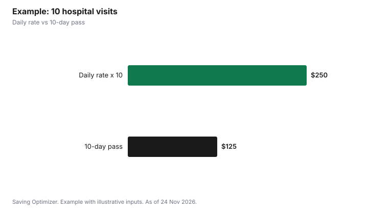

Healthcare · Canada
Hospital Parking Costs in Ontario: Multi-Day Passes and Discounts

If you or someone you care for visits an Ontario hospital often, ask for a multi-day parking pass. Since 2016, hospitals that charge more than $10 a day must sell 5-, 10- and 30-day passes at half the daily rate. Passes can be shared between patients and caregivers and last a year.
Key takeaways
- Hospitals charging over $10 a day must offer 5-, 10- and 30-day passes.
- Passes are 50% off the daily rate, transferable and good for a year.
- In-and-out privileges over 24 hours.
- Orillia Soldiers' Memorial raised its daily max to $12.50 on 31 Aug 2026 and added passes (checked 24 Nov 2026).
- Travelling 40 km or more for care? Parking can be part of a medical travel claim.
What the rules require
| Rule | What it means |
|---|---|
| Who | Hospitals charging more than $10 a day |
| Passes | 5-, 10- and 30-day |
| Discount | 50% off the daily rate |
| Sharing | Transferable between patients and caregivers |
| Expiry | One year from purchase |
Other ways to pay less
- Ask the parking office or patient relations about passes.
- Ask social work about help for long stays.
- Use transit or a drop-off for short visits.
- Check nearby municipal lots.
- Keep receipts if you travel 40 km or more.

Ten visits: an example
Example: 10 visits at a $25 daily maximum cost $250. A 10-day pass at 50% off costs $125.
See the medical expense tax credit and parking vs transit.
Sources
- Government of Ontario, Ontario making hospital parking more affordable (18 Jan 2016), checked 24 Nov 2026.
- Orillia Soldiers' Memorial Hospital, Hospital parking rates increasing (21 Aug 2026), checked 24 Nov 2026.
- Canada Revenue Agency, Medical expenses (RC4065), checked 24 Nov 2026.
Frequently asked questions
Do Ontario hospitals have to offer parking passes?
Those charging more than $10 a day must offer 5-, 10- and 30-day passes.
How much do hospital parking passes save?
They're 50% off the daily rate.
Can my family use my parking pass?
Yes. Passes are transferable between patients and caregivers.
How long do passes last?
One year from purchase.
Can I claim hospital parking on my taxes?
If you travel at least 40 km for care, parking can be part of eligible travel expenses.
Researched and drafted with AI assistance and fact-checked against official Canadian sources. How we create content.
Note: Daily rate is an example. Education only.